42dot Map SDK는 지도 기반의 서비스를 제공하는 포티투닷의 표준 지도 가이드라인입니다. 다양한 서비스에서 사용되는 표준 지도의 비주얼 아이덴티티를
정의했으며 지도 사용성과 브랜드 아이덴티티와의 연결성에 중점을 두었습니다. 지도 아이덴티티는 하나에서 출발하여 각 환경과 목적에 따라 주요 콘텐츠를 강화하고
다양한 서비스와의 결합을 목표로 제작되었습니다.
SDK에 필요한 모든 요소의 디자인을 정의하고 일관성 강화하는 전체 과정의 책임을 맡았습니다. 지도의 핵심 정보인 지도 아이콘의 디자인 가이드라인을 정의하고
지도 제작 도구 서비스에 필요한 UX 설계와 UI 디자인을 진행했습니다.
POI symbols
아이나비에서 제공하는 POI 리스트 중 하나의 그룹으로 제공된 데이터들이 어떤 메타포를 가지는지 검수합니다. 결과에 따라 개선이 필요한
지점에 대해서 직관적인 메타포로 정보를 전달할 수 있도록 아이콘을 재정의했습니다.
Map styles
지도의 사용성과 전반적인 컨셉을 담은 전체 지도 테마 스타일을 정의했습니다. 주로 경로와 노선을 확인하는 자사 서비스의 목적성에 따라
지도 위에 표시되는 정보들이 명확하게 전달될 수 있도록 기획했습니다.
Route guidance
지점을 연결하는 경로 안내는 지도에서 가장 우선적인 시각 정보입니다. 아이나비 시스템즈에서 제공되는 데이터 템플릿에 따라 디자인을 가공하고
재정의해 사용성과 아이덴티티가 연결되도록 개선했습니다.
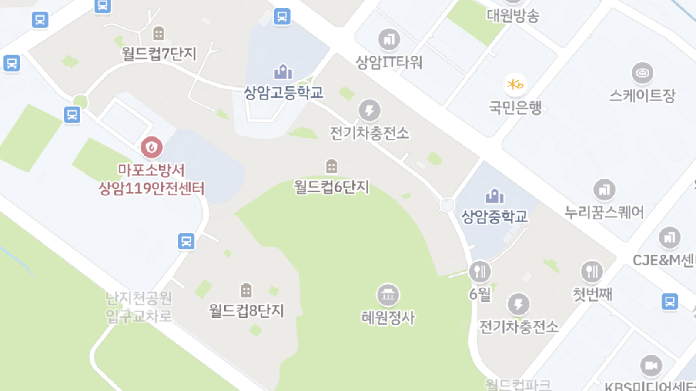
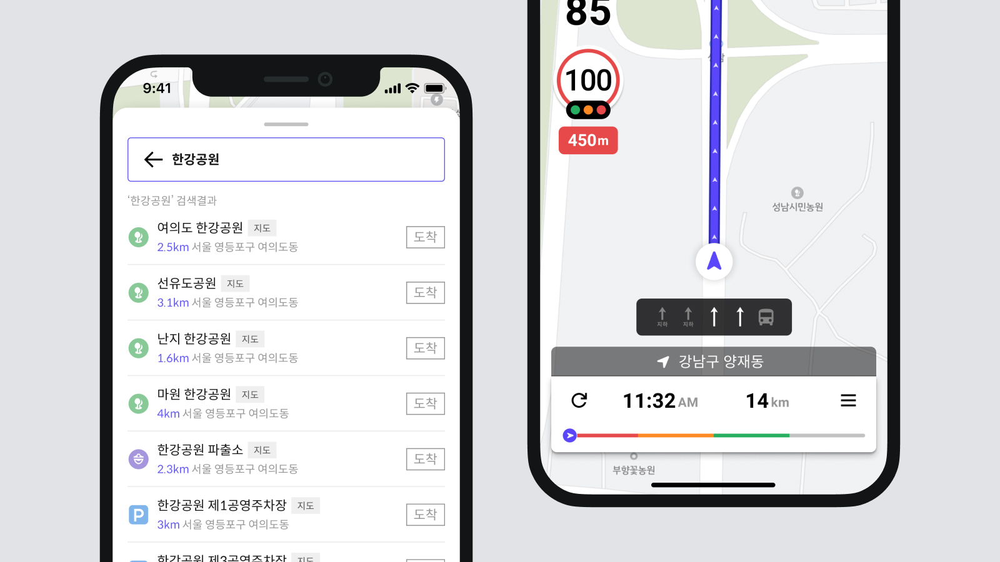
POI Symbols
POI(관심지점, Point of Interest) 아이콘은 지도의 가장 기본적인 비주얼 아이덴티티 요소이며 브랜드 가이드라인에서 확장된 형태적 특징을 갖고 있습니다.
사용자가 지도를 이용하는 모든 접점에 걸쳐 지형과 위치에 대한 정보를 신속하게 전달되도록 합니다. 지도 심벌은 규격 내 채워진 벡터 요소 비율의
평균값을 통일해 모든 POI 아이콘들이 동일한 표시 수준을 갖도록 설계되었습니다.
All Symbols
Grid system
가장 인지적이고 기능적인 색상으로 POI 속성을 빠르게 구분합니다. 주요 콘텐츠를 침범하지 않는 표시 수준으로 적용해 다양한 모빌리티 서비스와
연결성을 높입니다. 표시되는 정보의 종류에 따라 지도 테마와의 조화도를 고려했습니다.
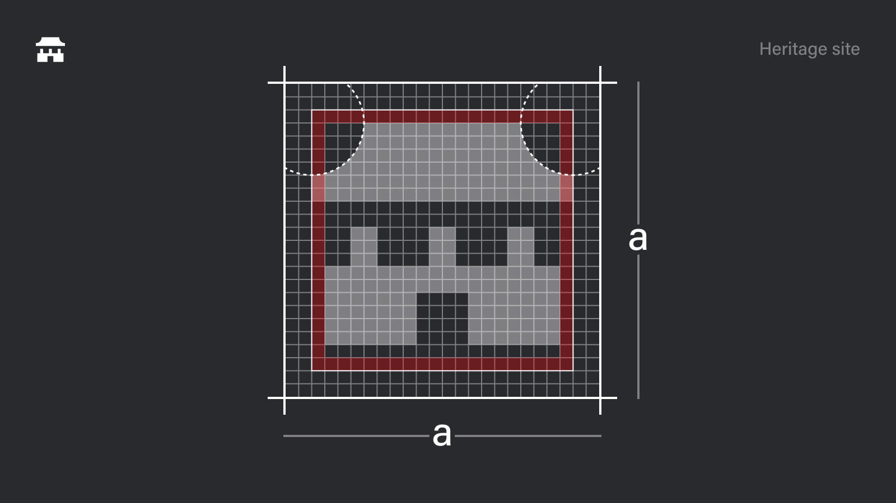
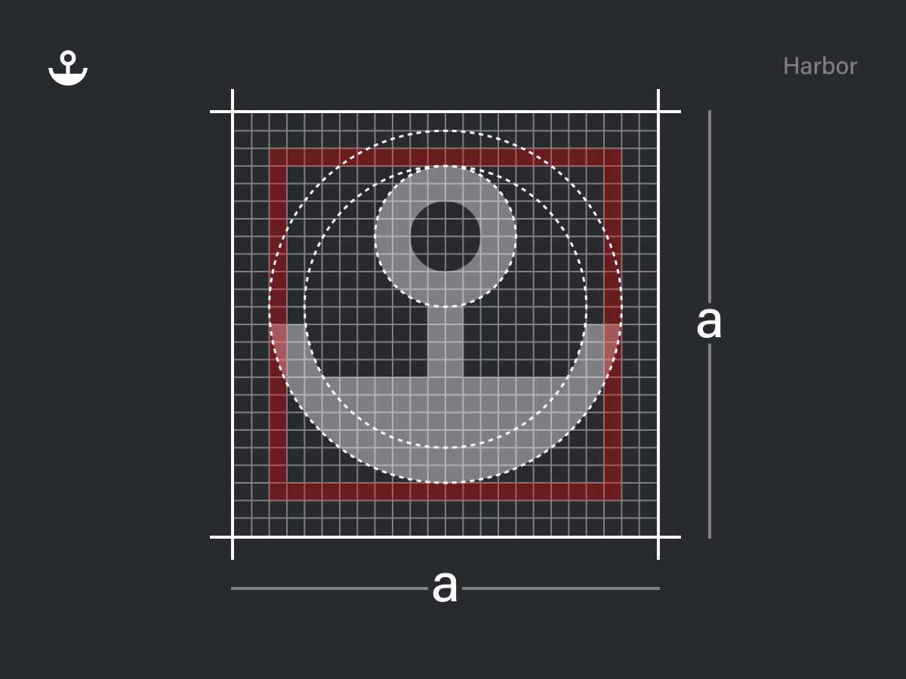
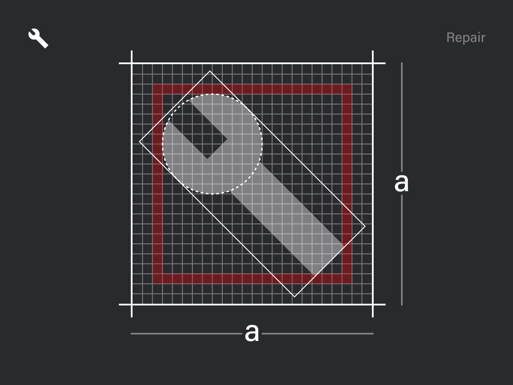
Color & Style
지도 심벌을 구성하는 색상 시스템은 가장 인지적이고 기능적인 색상으로 POI 속성을 빠르게 구분해야 합니다. 지도 위에 적용될 다른 주요
콘텐츠를 침범하지 않는 표시 수준으로 적용해 다양한 모빌리티 서비스와 연결성을 높입니다. 표시되는 정보의 종류와 밀도에 따라 지도 테마와의
조화도를 고려했습니다.
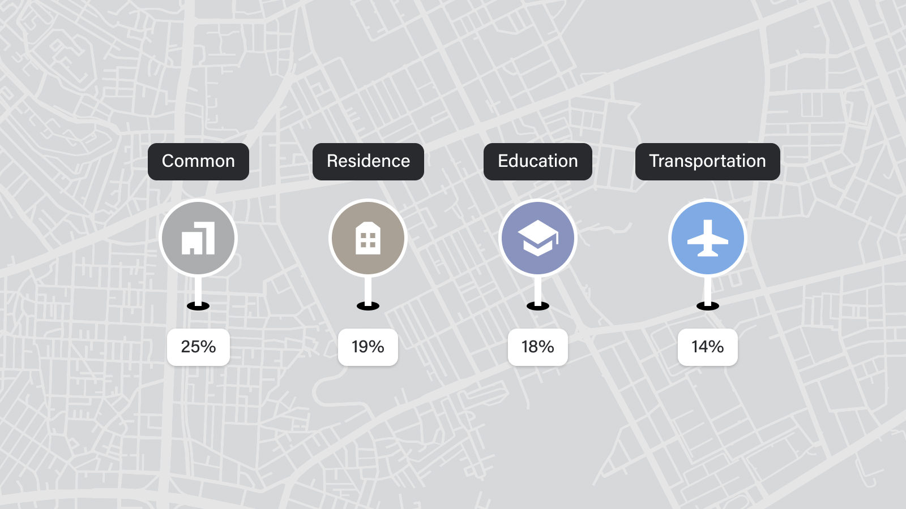
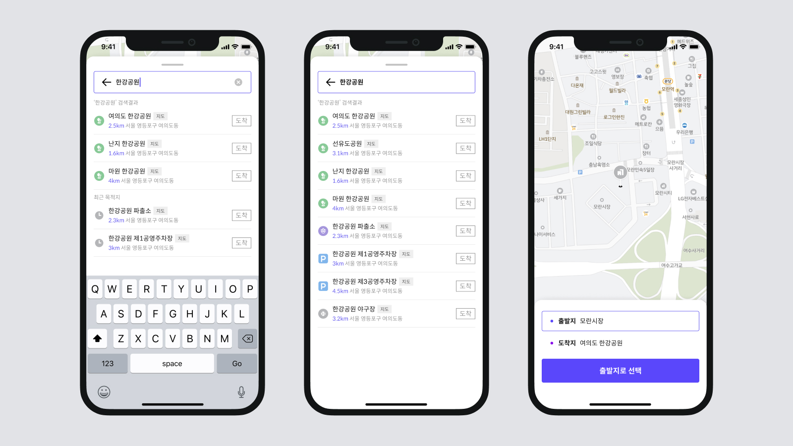
POI Interaction
사용자가 선택한 POI 정보는 간결한 애니메이션 피드백을 통해 선택된 정보를 명확하게 전달합니다. POI 인터랙션은 지형, 위치정보의
중심 좌표에서 벗어나지 않도록 정의하고 중심 좌표 지점을 인지할 수 있는 핀 형태의 디자인을 적용했습니다.
Map Marker
사용자가 지정한 지점에 대한 정보는 함축적이지 않고 직관적인 언어를 사용하고, 브랜드 가이드라인에 따른 색상을 적용하여 기능 유형에 따른
일관적인 디자인 경험을 제공합니다. 선택된 지점 정보를 정확하게 전달하기 위해 이미지 영역에 임의의 여백을 포함해 제작되었습니다.
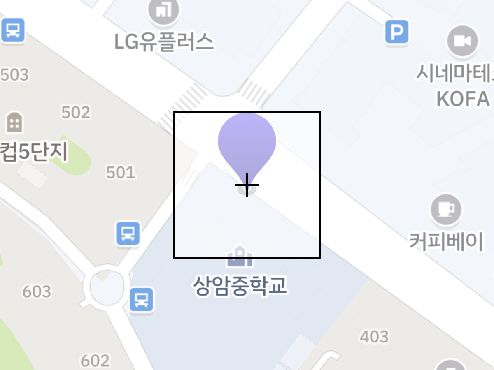
01. Default
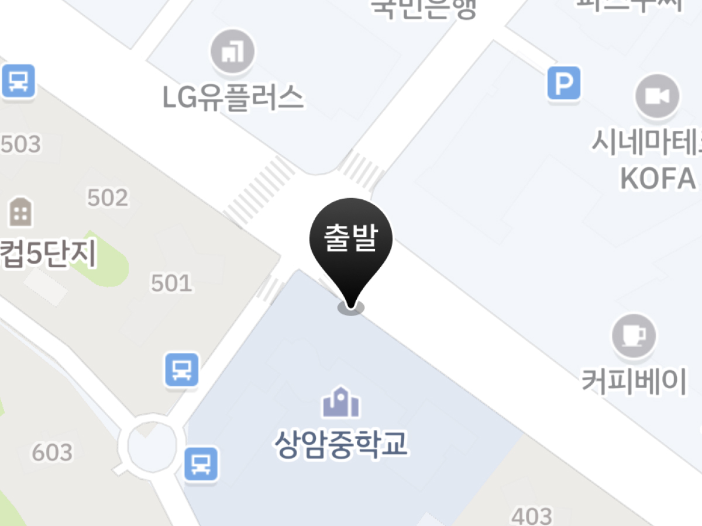
02. From
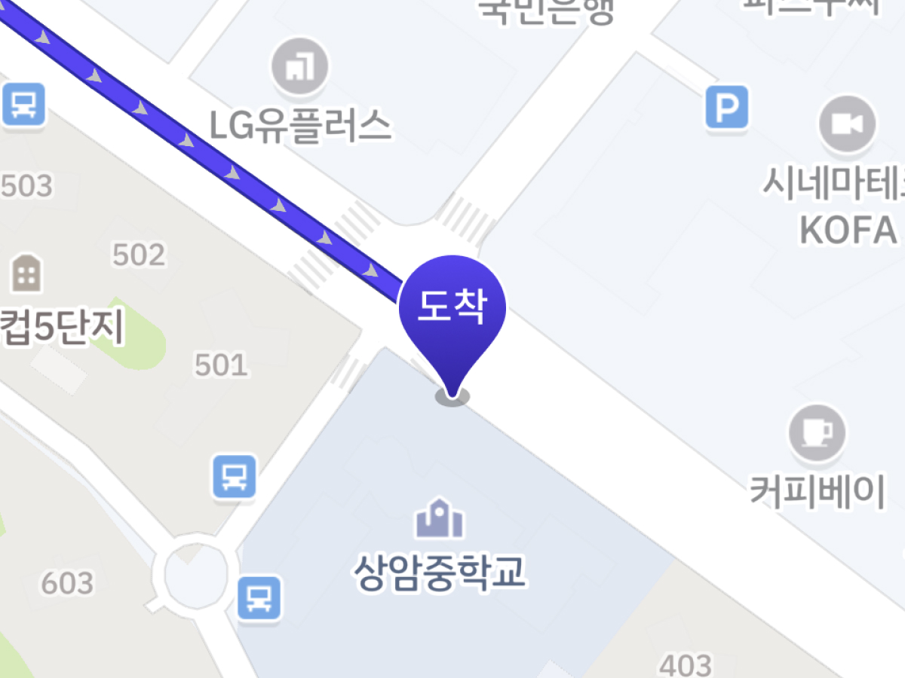
03. To
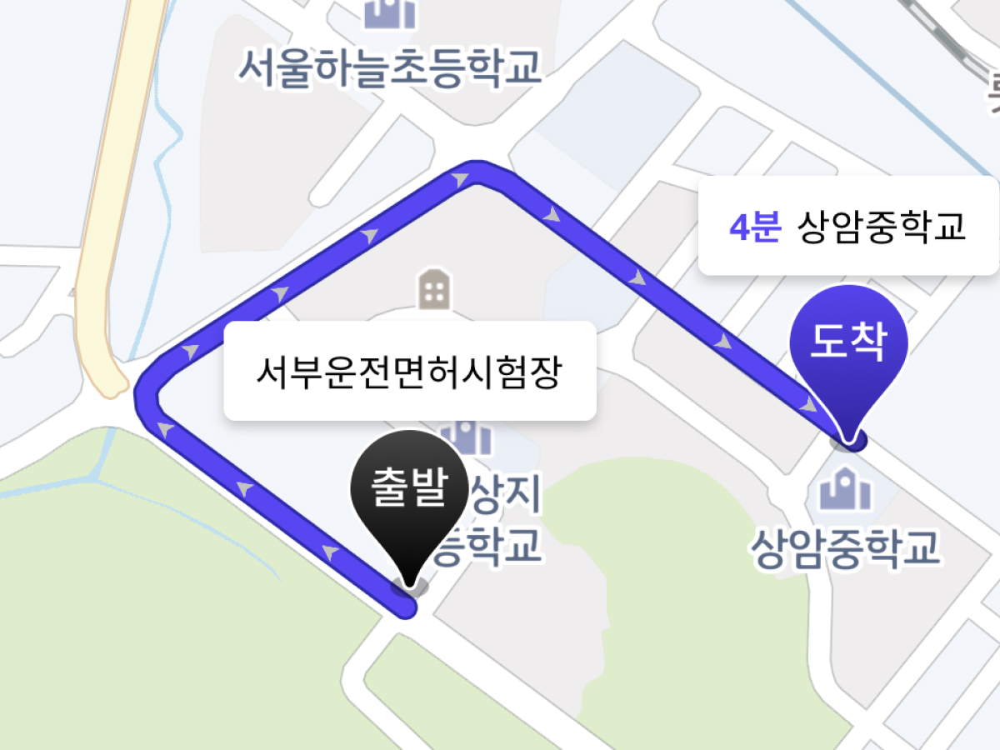
04. Routing
Map Styles
지도 스타일의 핵심 요소인 폴리곤은 지도의 위치 정보보다 큰 개념의 지형 정보를 제공합니다. 주거 단지, 교육 시설 단지 등 사용자가
자주 찾는 정보를 사용 빈도에 따라 우선 표시하여 사용자 친화적인 지도 UX를 제공합니다. 표준 지도는 모든 정보를 제공하나,
다른 서비스와의 콘텐츠 결합을 목표를 갖고 주요 콘텐츠를 보조하는 사용성을 갖습니다.
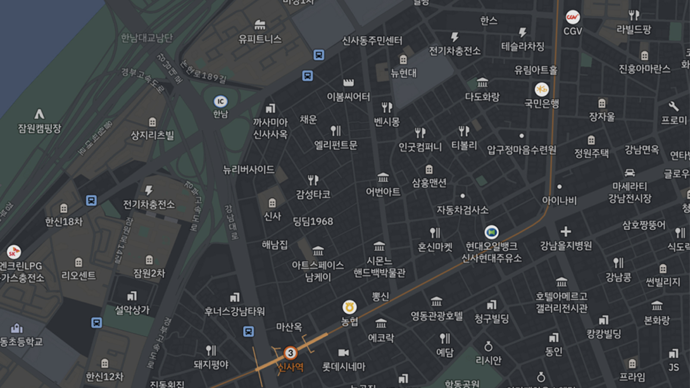
Route Guidance
내비게이션 SDK에서 가장 핵심적인 요소로 제공되는 경로 안내 디자인은 중립적인 성격을 가집니다. 다양한 모빌리티 서비스에 바로 적용 가능하도록
기획되었으며 42dot의 브랜드 아이덴티티를 포함한 기능적인 디자인을 제공합니다.
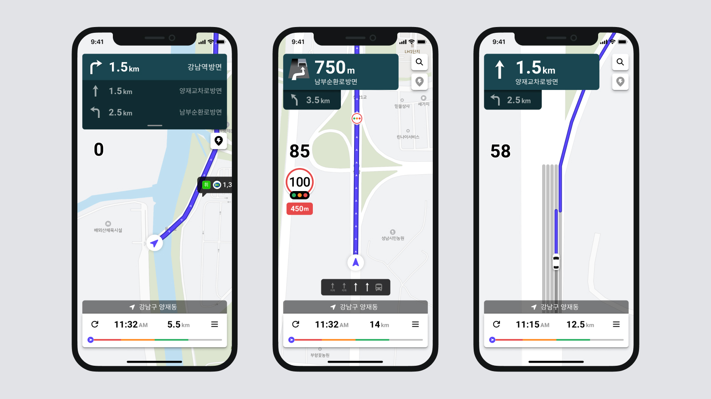
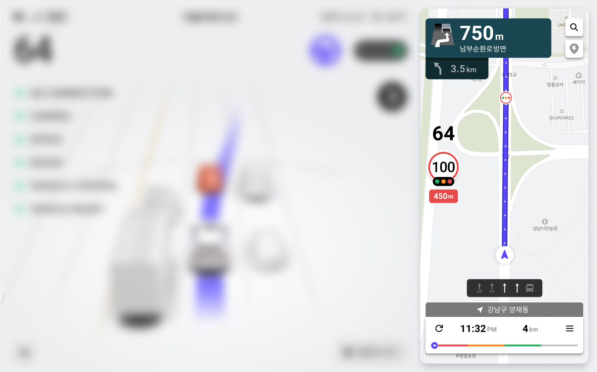
UMOS Map Studio
포티투닷 표준 지도의 가이드라인을 정의하면서, 자체 지도 스타일 편집 도구인 UMOS 맵 스튜디오를 적극 활용했습니다. UMOS 맵 스튜디오는
스타일, 아이콘, 폰트, POI 우선순위 조정 등 지도의 스타일을 생성하고 편집할 수 있습니다. 지도 아이덴티티를 정의하면서 사용된
도구의 개선 지점을 파악하여 사용성을 개선하고 브랜드 아이덴티티를 더했습니다.
Editor
선택된 데이터의 가공 가능한 정보들이 제공되며 데이터의 속성, 위치, 기준점 등과 같은 표시 값에 대한 상세 정보를 수정할 수 있습니다.
Navigation
상단 내비게이션은 스타일의 이름과 스타일을 설정(내보내기, 배포 등)할 수 있는 메뉴들이 위치합니다.
Property
선택된 데이터에 대한 상세 정보를 제공합니다. 편집 불가능한 정보로 편집 가능한 데이터 정보와 영역을 구분해 접근성에 따라 배치했습니다.
Chats
편리한 협업 환경을 위해 실시간으로 메시지를 주고받을 수 있습니다. 또한 다른 사용자의 화면을 따라갈 수 있는 Screen Tracking 기능을
적용해 다른 사용자의 작업 지점을 직접 확인할 수 있도록 적용했습니다.
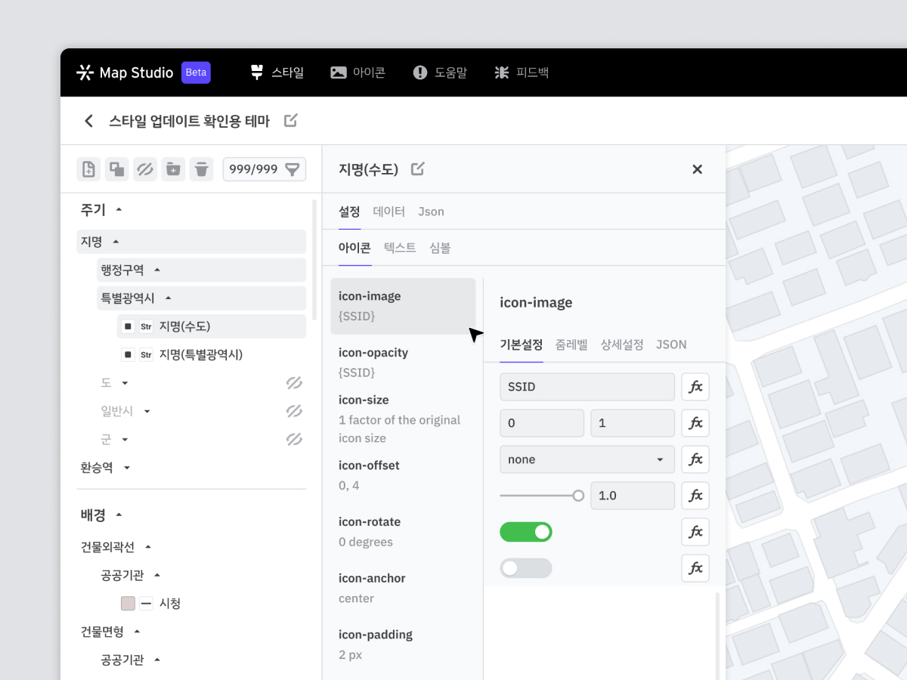
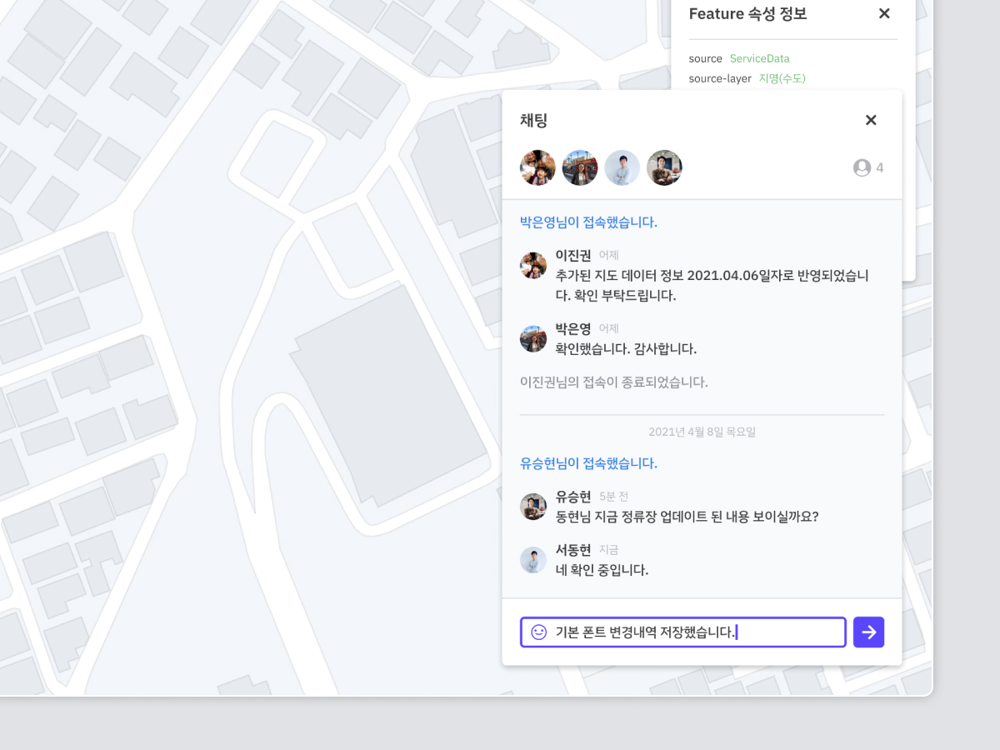
What I Learned
Display testing
지도 상 표시되는 POI 심벌들의 표시 수준을 테스트하며 1px에 따라 변경되는 심미적, 가시적 완성도를 체감할 수 있었습니다. 표시 수준 향상을 위해
정확한 좌표값이 지정된 완성도 높은 SVG 파일을 제작하며 마이크로 디자인 영역을 경험해 볼 수 있었습니다.
Adaptive design
각 테마 별 인터페이스 디자인을 정의하며 최적화된 컴포넌트 요소를 만드는 경험을 했습니다. 하나의 컴포넌트 요소가 주어진 환경에 따라
변화에 용이하도록 상세한 디자인 스펙을 정의해 볼 수 있었습니다.
Web environment
웹 에디터를 만들며 웹의 구조와 웹 개발 환경에 대한 이해를 쌓았습니다. 웹 디자인 결과물을 개발 담당자에게 전달하며 정적 이미지가 아닌
동적 환경에 대한 디자인 사양을 정의하는 경험을 쌓을 수 있었습니다. 이후 웹 개발 스터디를 시작해 마크업 가능한 수준의 HTML/CSS 지식을
조금이나마 쌓을 수 있었습니다.
Epilogue
SDK 디자인을 정의하면서 단순한 디자이너의 역할이 아니라 개발 관점에서 효과적인 디자인 자산 관리 환경에 대한 고민을 할 수 있었습니다.
다양한 플랫폼에서 일관성을 제공하기 위한 가이드라인을 정의했고, 지도 데이터 가공 협업을 통해 UX 관점에서의 디자인 경험을 쌓을 수 있었습니다.